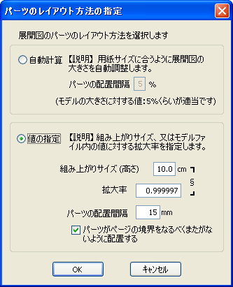
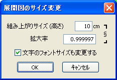
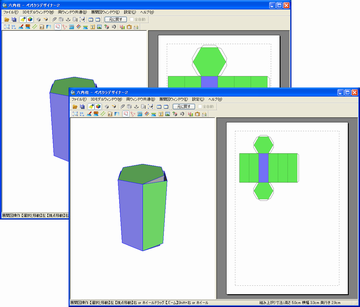

組み立て後の作品の大きさを考慮して展開図のサイズを変更することができます。その方法は2種類用意されています。
ツールバーの[全自動]のチェックを外して[展開]ボタンを押すと、[パーツのレイアウト方法の指定]ダイアログが表示されます。ここで[値の指定]を選び、数値を入力することでサイズを指定できます。
[組み上がりサイズ（高さ）」で指定するとわかりやすいでしょう。

[パーツレイアウト方法の指定]ダイアログ
[展開図ウィンドウ]-[展開図のサイズ変更]を選びます。[パーツのレイアウト方法の指定]ダイアログから「値の指定」部分だけを抜き出したもので、数値を直接入力してサイズを指定します。
パーツのレイアウトを維持したまま、大きさだけが変化します。

[展開図のサイズ変更]ダイアログ

異なるサイズを指定して展開した様子